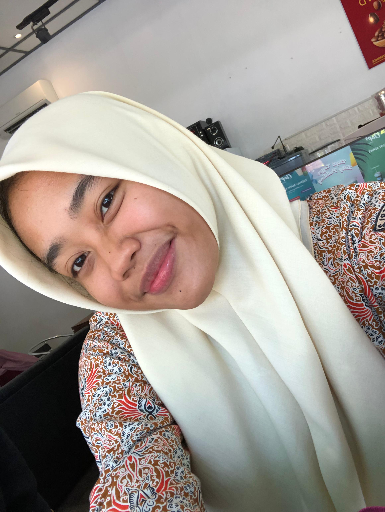

Siswa SMA Negeri 2 Madiun

Halo! Saya Zazkia Aurora
Saya adalah seorang siswa di SMA Negeri 2 Madiun. Saya memiliki berbagai minat mulai dari bela diri, olahraga, hingga olahraga lari. Saya selalu berusaha menyeimbangkan pendidikan dengan hobi saya untuk terus berkembang dalam segala hal.
Selain itu, saya percaya bahwa kesuksesan datang dari usaha dan ketekunan dalam mengejar passion. Itulah yang selalu saya pegang dalam hidup saya sehari-hari.
Anda bisa menghubungi saya melalui platform berikut: